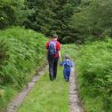

Things to do
Sight seeing
There are a few towns within easy reach of Tyddyn Tyfod, the closest being Corwen (6 miles), Bala (8 miles) and Llangollen (17 miles).
The local town of Bala (a 15 minute drive) offers visitors a number of sight seeing opportunities, centred around the beautiful Bala lake.
Eating out
For those who don't fancy cooking on holiday, Bala has plenty of good eating places from good restaurants, pubs, fish and chip shops to Chinese and pizza takeaways.
The local pub/restaurant The Goat, always has a good atmosphere and is less than a ten minute drive away and the local garage/shop is also less than a ten minute drive away.
Menus and information on local pubs, take aways, and restaurants can also be found in the guest book.
{kind=link}
Activities
The area is well known for it's outdoor activities from walking to water sports and mountain biking.
If you are keen to venture further a field there are plenty of things to keep you busy. A folder in the house provides a vast range of things to do and see.